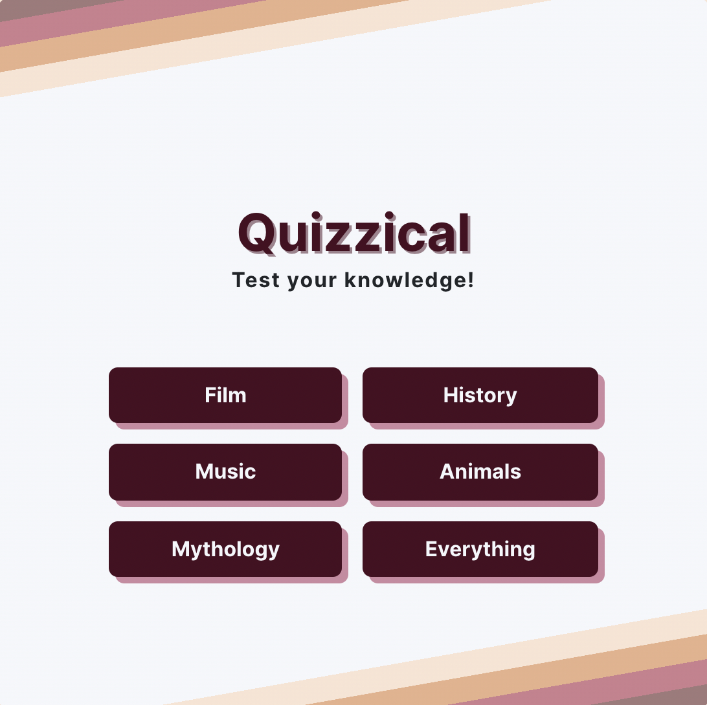

Project Description
Concept
This is a React web application that pulls trivia questions and multiple choice answers from the open source API Open Trivia Database. Players choose a category, and are provided with five multiple choice question. Upon submitting their answers, they are scored out of five, provided the correct answers in comparison to the answers they chose, and offered the choice to play again in the same category, or to start over and pick a new category.
This project originated as a solo project challenge from the Scrimba Frontend Career Path. While it was a class project, no solution was provided, and the code is entirely mine. The only thing provided by Scrimba to complete this project was a Figma file for the UI design.
Execution
The first draft of this project was a one-for-one recreation of the UI design provided by the figma file, although as I worked on the project, there were a few things I wanted to change.
First, I noticed when looking at the API documentation that you could choose from a list of categories when pulling trivia questions. Therefore, my first update was to provide a category selector on the welcome screen, to allow players the choice of what category to play.
Second, I added a responsive design for mobile screens. This was relatively simple, just making sure the quiz container never exceeded the viewport, and the question buttons were larger and easier to select.


I used Bootstrap to add a spinner while the questions were loading, while the app is making an API call. This was my first time using Bootstrap and I was surprised to discover how easy it was to add to my exisiting application.
Finally, I updated the color palette of the design! Which obviously didn't change the functionality of the game at all, but I wanted it to have a little more personality.